📊 【一目でわかる】全7自動化プロトコル 統合対照マトリクス
Master Comparison Table各プロトコルが対象とする実験内容、処理検体数、所要時間（作業者拘束時間 vs ロボット自動時間）、必要なOpentrons機器・ピペット・試薬・モジュールを一元集約しています。
| プロトコル番号・名称 | 実験の目的と対象 | 標準検体数 | 所要時間 (96検体) 手動 vs APEX自動 |
何をしたのか（主要自動化動作） | Opentrons機器 & モジュール | ピペット & チップ | 使用試薬・培地 |
|---|---|---|---|---|---|---|---|
|
Protocol 1 Heat Shock Transformation (ヒートショック形質転換) |
プラスミドDNAのコンピテントセルへの自動導入 | 96 検体 (96-well) |
拘束時間: 0.5 分 (手動: 25.8分 / 98%減) 自動時間: 109.4 分 合計: 109.9 分 |
• 予冷セル(10 µL)のPCRプレート分注 • プラスミドDNA(1 µL)の添加・混合 • サーモサイクラー自動密閉: 4℃(30分) → 42℃(30秒) → 4℃(2分) • SOC培地(50 µL)分注・懸濁 • 37℃で60分間復帰培養 |
• OT-2 本体 • Thermocycler Module GEN1 (スロット7,8,10,11) |
• P20 8ch GEN2 • P300 8ch GEN2 • 20 µL / 300 µL フィルターチップ |
• ケミカルコンピテントセル • プラスミドDNA (2.7〜17.7 kb) • SOC培地 |
|
Protocol 2 Selective Plating (寒天選択培地への播種) |
抗生物質寒天プレートへの96グリッド高精度スポット | 96 スポット (単一寒天プレート) |
拘束時間: 2.0 分 (手動: 19.6分 / 90%減) 自動時間: 8.3 分 合計: 10.3 分 |
• 寒天重量・面積から高さを数学的算出 • 形質転換液(5 µL+予備1 µL)を吸引 • 寒天表面 +0.5 mm からソフト滴下 • ブローアウトを行わず5秒静置し液滴を静かに着地 (気泡・拡散防止) |
• OT-2 本体 • (外部: 37℃静置インキュベーター、精密天秤) |
• P20 8ch GEN2 • 20 µL チップ |
• LB寒天培地 (1.5% agar) • 各種抗生物質 (Amp, Kan, Cm, Zeocin) |
|
Protocol 3 Colony Sampling (コロニー採取・植菌) |
画像認識不要の寒天コロニー自動採取 & 液体培地植菌 | 96 コロニー (96ディープウェル) |
拘束時間: 2.0 分 (手動: 18.6分 / 89%減) 自動時間: 10.9 分 合計: 12.9 分 |
• ディープウェルへLB液体培地を自動分注 • チップ先端で寒天上のコロニーを採取: - Single Pierce法: 高密度中心を貫通 - Spiral法: 低密度用スパイラル走査 • 液体培地中へ浸漬・2回ピペッティング懸濁 |
• OT-2 本体 • (外部: 37℃振盪インキュベーター) |
• P20 8ch GEN2 (採取) • P300 8ch GEN2 (培地) • 20 µL / 300 µL チップ |
• LB液体培地 (抗生物質添加) |
|
Protocol 4 Protein Expression Induction (本培養植菌 & 発現誘導) |
前培養からの本培養植菌および誘導剤の自動添加 | 96 培養系 (0.5〜1.0 mL) |
拘束時間: 4.0 分 (手動: 30.5分 / 87%減) 自動時間: 105.9 分 合計: 109.9 分 |
• 新鮮LB培地(500〜1000 µL)を自動分注 • 前培養液(5 µL)を本培養へ植菌・混合 • 37℃振盪インキュベーターでOD600まで培養 • IPTG(0.1 mM)またはアラビノース(1.33 mM)を5 µL自動添加・混合 • 20℃で18時間発現振盪培養 |
• OT-2 本体 • (外部: 37℃ / 20℃振盪インキュベーター) |
• P20 8ch GEN2 (植菌・誘導) • P300 8ch GEN2 (培地分注) • 20 µL / 300 µL チップ |
• 新鮮LB培地 • 誘導剤 (0.1 mM IPTG / 1.33 mM L-アラビノース) |
|
Protocol 5 Colony PCR Sample Prep (コロニーPCR調製) |
形質転換体の確認・品質管理（QC）用PCR反応系構築 | 24〜96 検体 |
拘束時間: 約 5〜10 分 自動時間: 約 75〜90 分 (PCR 30サイクル運転含む) |
• 滅菌水(11.5 µL)をPCRプレートに分注 • コロニー再懸濁 • OneTaq 2X MasterMix+プライマー(13.5 µL)を添加・4回混合 • サーモサイクラー自動密閉: [94℃ 30s / 52℃ 30s / 68℃ 45s] × 30回 • アガロースゲル電気泳動でサイズ確認 |
• OT-2 本体 • Thermocycler Module GEN1 • (外部: アガロースゲル電気泳動槽) |
• P20 8ch GEN2 • P300 8ch GEN2 • 20 µL / 300 µL チップ |
• 滅菌水 • OneTaq Quick-Load 2X Master Mix • 特異的PCRプライマー対 (0.5 µM) |
|
Protocol 6 SDS-PAGE & Cell Lysis (菌体破砕・可溶化・熱変性) |
菌体化学溶菌、可溶性画分の抽出、SDS熱変性調製 | 96 検体 (下流精製原料) |
拘束時間: 約 5〜8 分 (遠心機移動のみ) 自動時間: 約 45〜55 分 合計: 約 50〜60 分 |
• 培養液(150 µL)を採取し遠心集菌 • クリアランス3 mm・低速10 µL/s でペレットを乱さず上清除去 • BugBuster(40 µL)添加、5回懸濁、室温30分溶菌 • 遠心後、可溶性上清(40 µL) をPCRプレートへ自動回収 • 5x SDSバッファー(10 µL)添加、蓋105℃/95℃ 5分熱変性 |
• OT-2 本体 • Thermocycler Module GEN1 • (外部: 96ウェルプレート遠心機、SDS-PAGE電気泳動槽) |
• P20 8ch GEN2 • P300 8ch GEN2 • 20 µL / 300 µL チップ |
• BugBuster Protein Extraction Reagent • 5x SDSサンプルバッファー (還元剤含) • (下流: 磁気ビーズ, 洗浄・溶出バッファー) |
|
Protocol 7 OD600 Reading Prep (OD600測定サンプル調製) |
マイクロプレートリーダー用希釈サンプルの自動調製 | 96 検体 (ブランク含む) |
拘束時間: 約 1〜2 分 自動時間: 約 6〜8 分 合計: 約 8〜10 分 |
• 平底プレートに水/培地(90 µL)を自動分配 • 菌体培養液を5回ピペッティング均一化 • 菌液(10 µL)を添加・混合 (10倍希釈、総量100 µL) • ブランク列(A12-H12)には希釈液のみ100 µLを分注 • マイクロプレートリーダーで吸光度高速測定 |
• OT-2 本体 • (外部: 96ウェルマイクロプレート吸光リーダー) |
• P20 8ch GEN2 • P300 8ch GEN2 • 20 µL / 300 µL チップ |
• 滅菌水 または 新鮮LB培地 (希釈用) |
⚙️ 実験自動化に必要なシステムアーキテクチャ (Figure 1 詳解)
Architecture & Pipeline Flow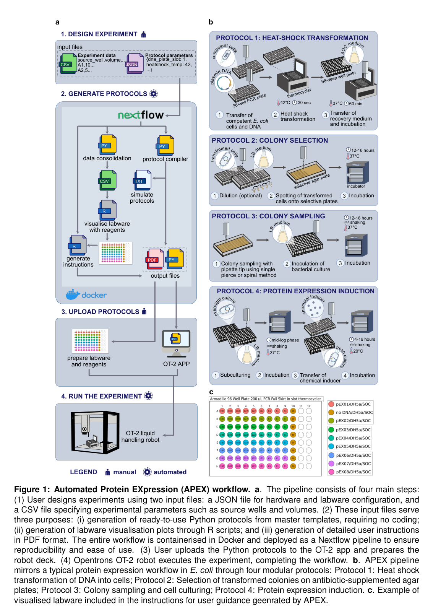
APEX（Automated Protein EXpression）は、実験者がPythonコードを書くことなく、表形式データ（JSON/CSV）からOpentrons OT-2の自動実行スクリプトを安全に生成・検証・実行できるコンテナ化パイプラインです。
- (a) パイプラインの4段階フロー: (1) ユーザーが機器設定（JSON）と分注マッピング（CSV）を定義 → (2) Nextflowパイプラインがマスターテンプレートから検証済みPythonスクリプトを自動生成し、Rスクリプトで試薬配置図を作成、PDFマニュアルを出力 → (3) Opentrons Appにスクリプトを読み込みデッキをセットアップ → (4) OT-2ロボットが実験を全自動実行。
- (b) 4つのコアプロトコルの実験サイクル: Protocol 1 (形質転換) → Protocol 2 (選択寒天播種) → Protocol 3 (コロニー採取 & 前培養) → Protocol 4 (本培養植菌 & 発現誘導) が一貫して連携。
- (c) Rによる視覚的ラボウェア配置図: 作業者が迷わず試薬をセットできるよう、どのウェルにコンピテントセル、DNA、SOC培地を配置すべきかが色分けされた図として自動生成されます。
(ノーコード設計)
• ピペット型番 (P20 multi / P300 multi)
• デッキスロット配置 (チップラック、リザーバー、プレート)
• 物理パラメータ (寒天密度 0.911 g/cm³, 吸引速度 10 µL/s, ペレットクリアランス 3 mm)
• サンプルID / プラスミドID
• 分注元ウェル (source_well) & 分注先ウェル (destination_well)
• 移送容量 (µL) / 誘導剤濃度 (IPTG 0.1 mM等)
(Nextflow + Docker)
🎯 寒天高さモデリング & コロニーサンプリング技術 (Figure 2 詳解)
Core Novelty: Physical Modeling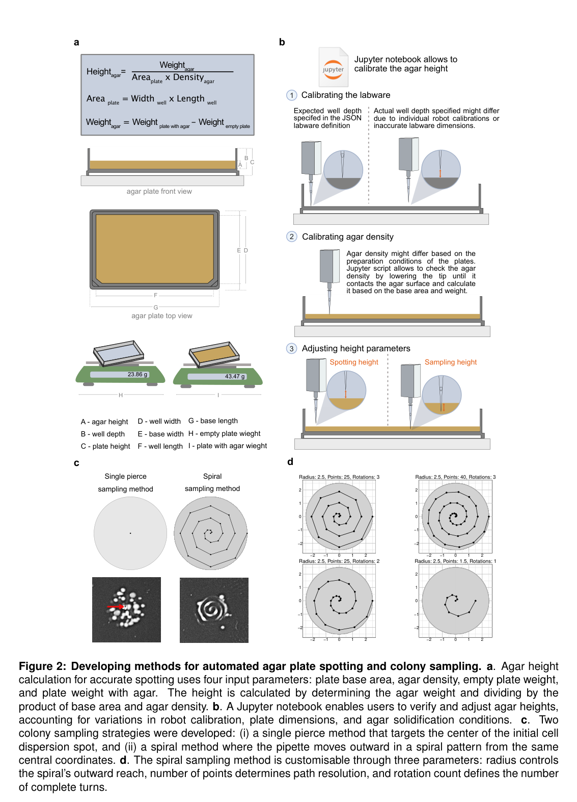
寒天プレートの自動ハンドリングにおける最大の課題は、手注ぎ寒天の厚みの個体差です。APEXは物理重量と幾何学モデルを用いた革新的なアプローチでこれを克服しました。
- (a) 寒天表面高さ（Height_agar）の計算モデル:
Height_agar = Weight_agar / (Area_plate × Density_agar)
プレートの空重量と注型後重量の差分（Weight_agar）、ベース面積（Area_plate = 幅×長さ）、およびLB寒天の密度（Density_agar ≈ 0.911 g/cm³）から、液面高さをミリ単位以下で正確に算出します。 - (b) 3ステップのキャリブレーション体系: (1) ラボウェア定義のウェル深度確認 → (2) 付属のJupyter Notebookを用いた寒天密度・高さの微調整 → (3) スポッティング高さ（寒天表面+0.5 mm）とサンプリング高さ（寒天貫通深度）の設定。
- (c) 2種類のサンプリング戦略:
• Single pierce法: 高菌密度のスポット中央をチップ先端で1回突き刺して採取。
• Spiral法: 低密度や菌の分布が不均一なスポットに対し、中心から外周へ滑らかなスパイラル軌道で走査して菌体を絡め取る。 - (d) スパイラル軌道の制御パラメータ: 半径（Radius: 例 2.5 mm）、補間点数（Points: 25〜40点）、および回転数（Rotations: 1〜3周）をJSONで細かくチューニング可能。寒天を削り取ることなく菌体のみを確実に採取できます。
📋 全7自動化プロトコル 詳細スペック & OT-2デッキ配置図
Step-by-Step with Deck Diagrams論文プロトコルマニュアル（S2）に掲載された各プロトコルの公式OT-2デッキ配置図とともに、動作フローと設定パラメータを詳述します。
Heat Shock Transformation (ヒートショック形質転換)
-
1
コンピテントセルの分注: 冷却されたCells Plate(スロット4)から、サーモサイクラー上の予冷PCRプレートへ10 µL/wellを分注。最小吐出量分の余剰吸引で高精度化。
-
2
プラスミドDNAの添加 & 混合: DNA Plate(スロット5)から各ウェルへ1 µLを添加し緩やかに1回ミキシング。チップ先端の液滴を再降下で確実にウェル内に移送。
-
3
完全自動ヒートショック: サーモサイクラー蓋が密閉。4℃(30分)冷却 → 42℃(30秒)熱ショック → 4℃(2分)急冷を完全無人で実行。
-
4
SOC添加 & 復帰培養: 蓋が開き、リザーバーからSOC培地50 µLを分注・3回懸濁。再度密閉し37℃で60分間振盪なしでインキュベート。
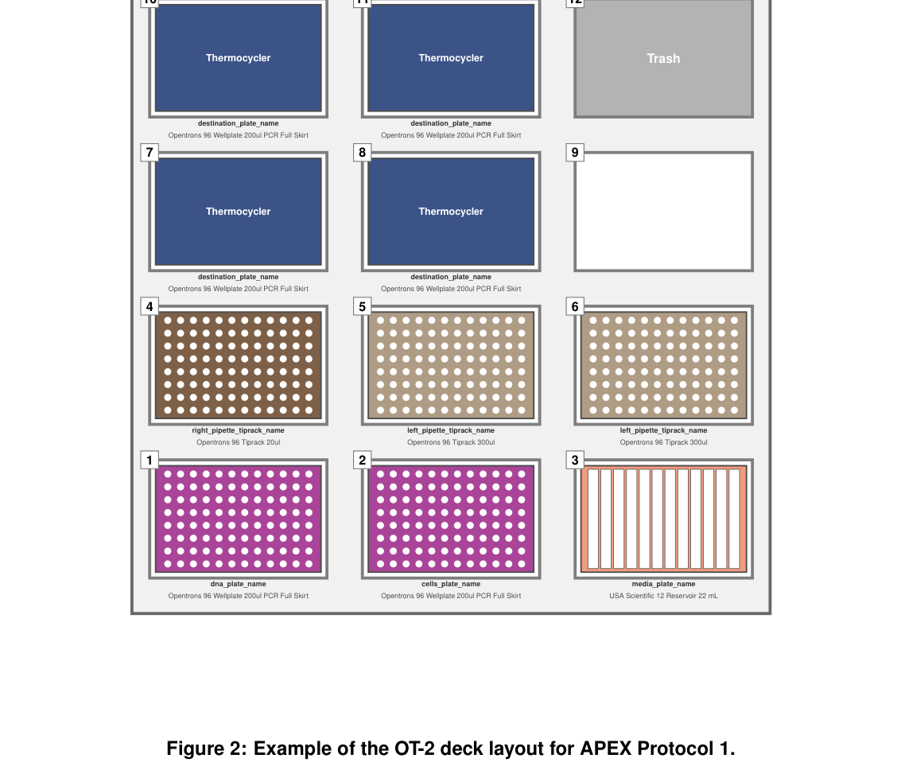
Selective Plating (寒天選択培地への播種)
-
1
寒天厚みの幾何学的算出: プレート空重量と注型後重量の差分、プレート面積、寒天密度(0.911 g/cm³)から液面高さをミリ単位以下で自動算出。
-
2
菌液の吸引: 形質転換後の菌液を20 µLで3回懸濁後、5 µL（+予備吸引1 µL）を吸引。
-
3
精密ソフトスポッティング: チップ先端を寒天表面からわずか+0.5 mm（Spotting height）に配置。ブローアウトをあえて行わず、吐出後5秒静置して毛細管現象で寒天上に綺麗に着地。
-
4
静置培養: 乾燥確認後、外部37℃インキュベーターで12〜18時間培養し単一コロニー群を形成。
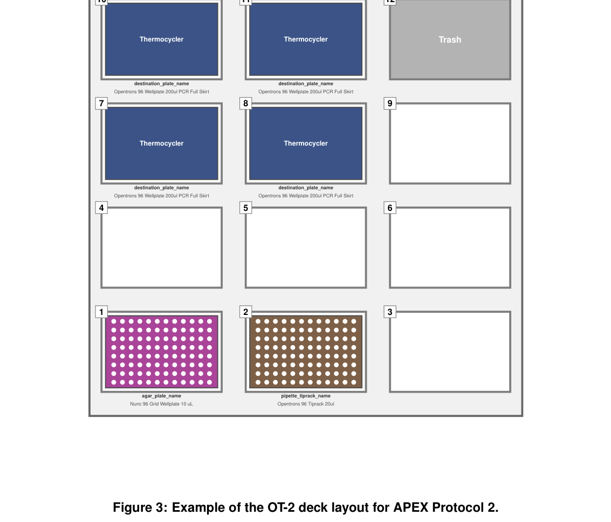
Colony Sampling (コロニー採取 & 植菌)
-
1
液体培地の自動分配: リザーバーから96ディープウェルプレートへ新鮮な選択LB培地を分注。
-
2
画像認識不要のコロニー採取: コロニー密度に応じてサンプリング戦略を実行。
• Single Pierce法: 高密度スポット中心をチップ先端で1回貫通刺突。
• Spiral法: 低密度用。中心から外周へ滑らかな渦巻き（半径2.5mm, 3回転）を描いて低速スキャン採取。 -
3
ディープウェルへの植菌: ディープウェル内の培地へチップを浸漬し、半量ピペッティング混合（2回）で均一懸濁。
-
4
前培養振盪: 37℃振盪インキュベーターで一晩前培養（Seed culture）。
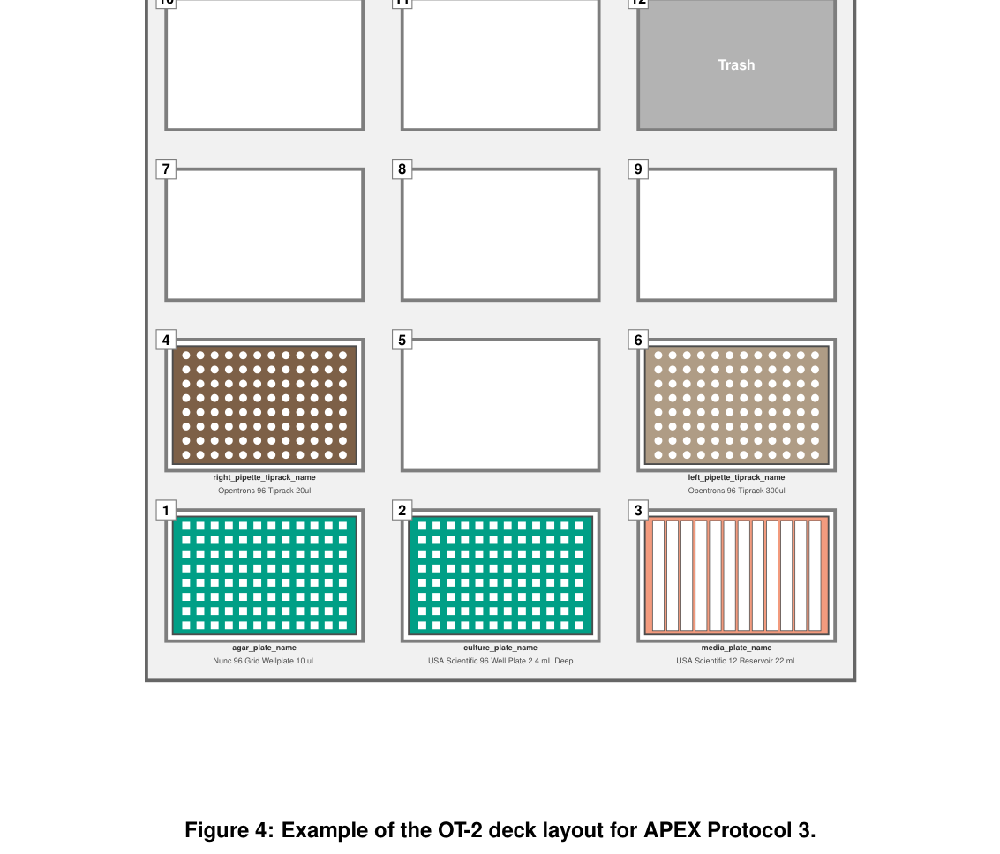
Protein Expression Induction (本培養植菌 & 発現誘導)
-
1
本培養用新鮮培地の分注: 発現用96ディープウェルプレートへ新鮮LB培地（500 µLまたは1000 µL/well）を自動分注。
-
2
前培養液の植菌: 一晩前培養液を5回ピペッティングして均一化し、5 µLを本培養プレートへ植菌・混合。
-
3
対数増殖期までの培養待機: プロトコルが一時停止。37℃振盪培養機でOD600 約0.6〜0.8まで増殖。
-
4
誘導剤の自動添加 & 発現培養: デッキ再セット後に再開。リザーバーからIPTG(0.1 mM)またはL-アラビノース(1.33 mM)を5 µL自動添加・混合。終了後20℃で18時間発現培養。
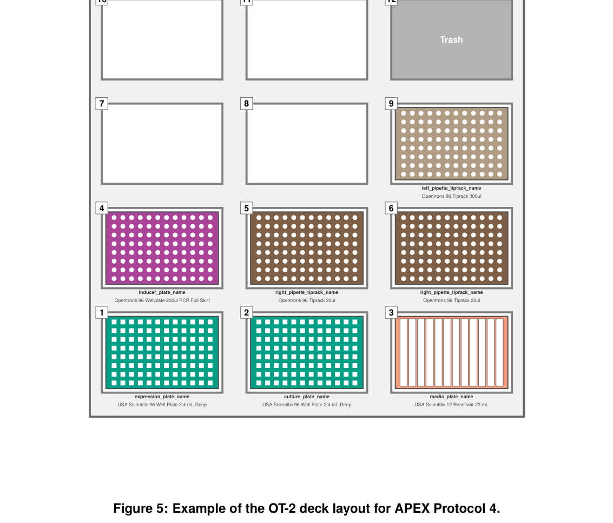
Colony PCR Sample Preparation (コロニーPCR調製)
-
1
滅菌水の分配: 96ウェルPCRプレートへ滅菌水11.5 µLを自動分配。
-
2
コロニー懸濁: プロトコル一時停止時に選抜コロニーを懸濁。
-
3
PCRマスターミックスの自動添加: OneTaq Quick-Load 2X Master Mix + プライマー混液(13.5 µL)を自動分注し4回混合。
-
4
オンデッキPCR増幅: サーモサイクラー密閉。初期変性94℃ 2分 → [94℃ 30s / 52℃ 30s / 68℃ 45s] × 30回 → 最終伸長68℃ 5分を実行。ゲル電気泳動でインサート長（sfGFP 711 bp等）を確認。
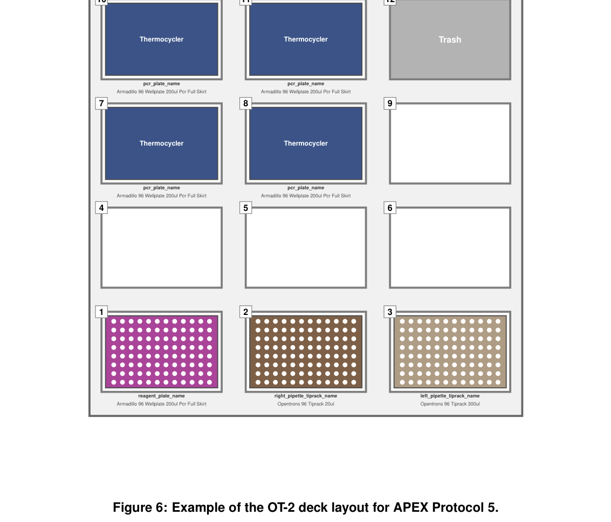
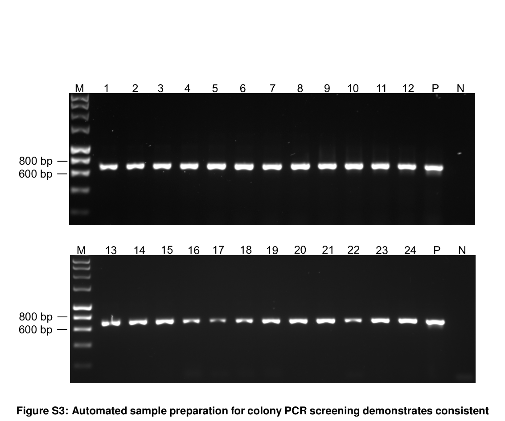
SDS-PAGE Sample Prep & Cell Lysis (菌体破砕・可溶化・熱変性)
-
1
菌液サンプリング & 遠心集菌: 発現培養プレートから150 µL採取し、外部プレート遠心機（3,884 ×g, 10分）で菌体をペレット化。
-
2
ペレット非崩壊上清吸引: デッキ復帰後、底面クリアランス 3.0 mm、超低速（10 µL/s）でペレットを吸わずに上清のみを優しく除去・廃棄。
-
3
細胞溶解 (Lysis): BugBuster溶菌液(40 µL)を添加し5回ピペッティングで完全懸濁。室温30分インキュベート後、遠心機で不溶性残渣を沈降。
-
4
可溶性画分の回収 & 熱変性: 可溶性タンパク質上清(40 µL)をサーモサイクラー上のPCRプレートへ移送。5x SDSバッファー(10 µL)を混合し、蓋105℃/95℃ 5分熱変性。（※この上清はそのまま磁気ビーズ精製にも直結）
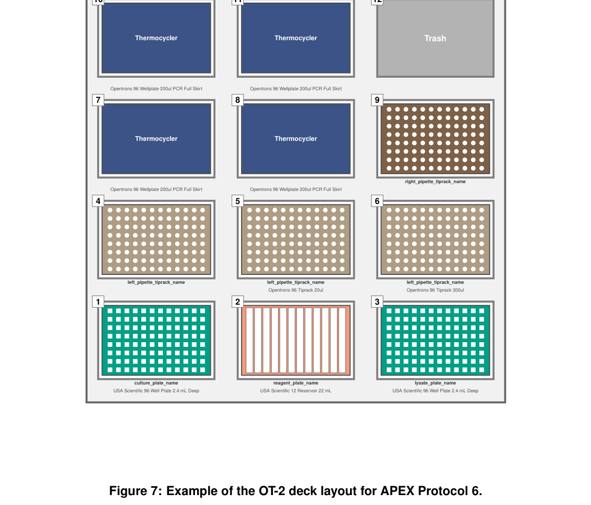
OD600 Reading Sample Preparation (OD600測定サンプル調製)
-
1
希釈液の分配: Corning平底プレートに水/培地90 µLを自動分注。ブランク列（A12-H12）には100 µLを分注。
-
2
菌液の均一懸濁: ディープウェルの菌液を5回ピペッティング（250 µL）して均一化。
-
3
菌液の添加・混合: 菌液10 µLを測定プレートへ分注・混合（10倍希釈、総量100 µL）。
-
4
プレートリーダー測定: 96ウェル吸光リーダーでOD600を高速測定し菌体密度を定量。
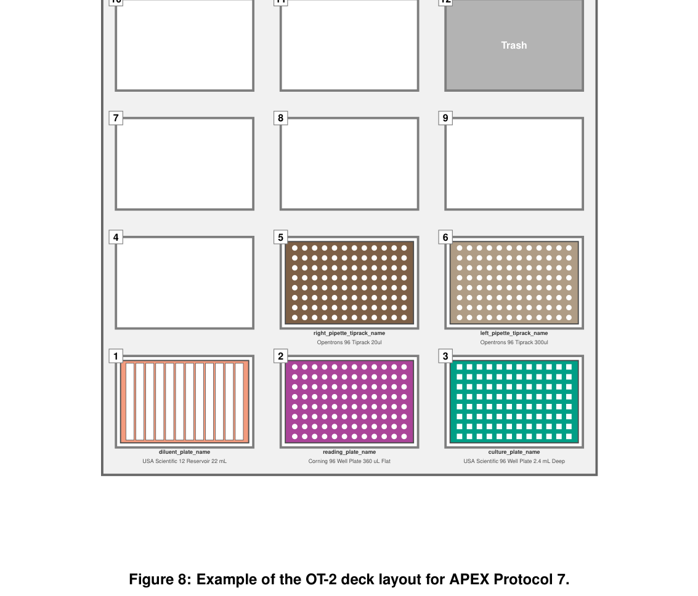
📈 実証実験データ & 性能評価 (Figure S1, 5, 6 詳解)
Time & Biological Performance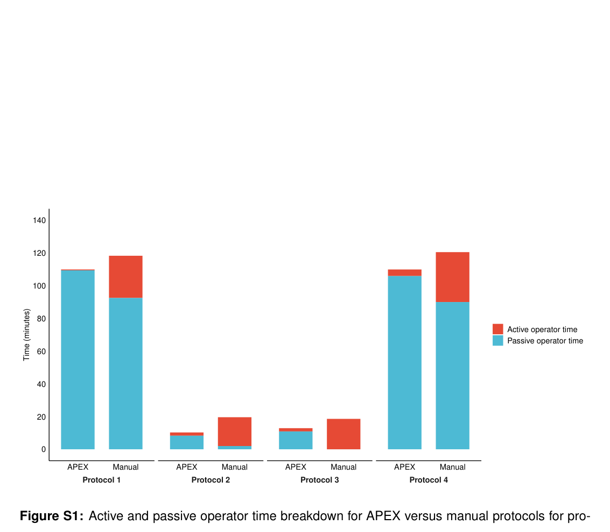
熟練研究者がマルチチャンネルピペットを用いて手動（Manual）で行った作業と、APEX自動化による時間を96サンプル規模で直接比較した実測グラフです。
- 作業者拘束時間（Active Operator Time）の激減: 手作業が必要な時間は赤色バーで示され、P1（形質転換）では手動25.8分からわずか0.5分へ、P2（播種）は19.6分から2.0分へ、P3（採取）は18.6分から2.0分へ、P4（誘導）は30.5分から4.0分へと激減しました。
- 自動処理時間（Passive Time）への置換: 青色バーで示される待ち時間・ロボット自動運転時間の間、研究者は完全に拘束から解放され、並行して他の実験やデータ解析を行うことが可能になります。
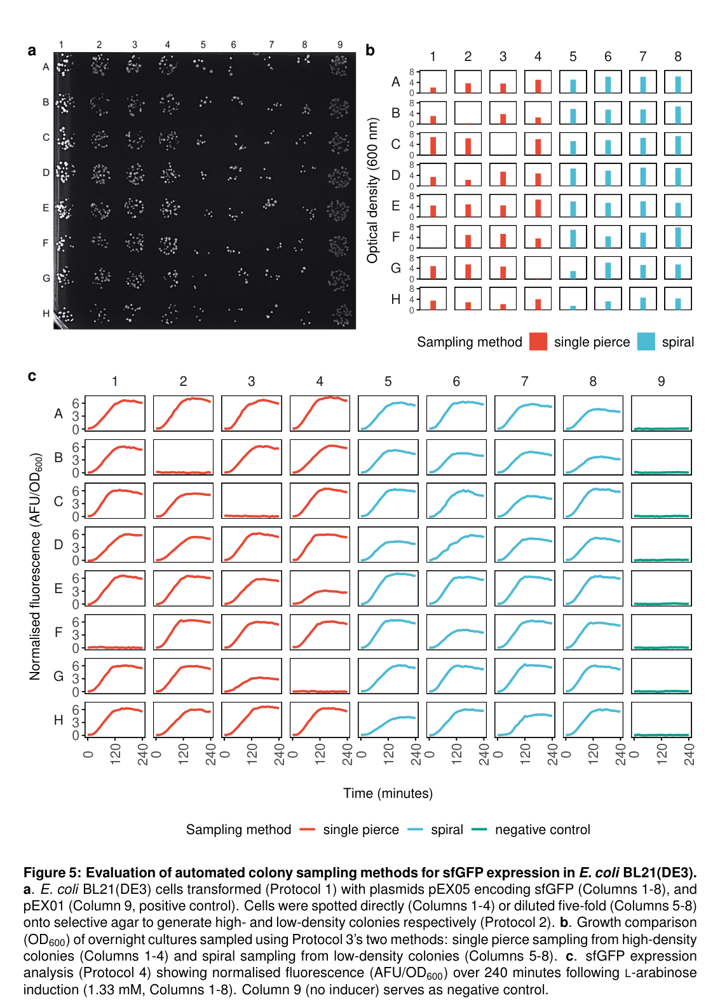
Single pierce法とSpiral法の2種類のサンプリング戦略を用いて採取されたクローンの増殖性と発現均一性を評価したデータです。
- (a) 96グリッド寒天プレート: Columns 1-4は高密度コロニー（希釈なし）、Columns 5-8は5倍希釈による低密度コロニー。Column 9はポジティブコントロール。
- (b) 採取後の一晩培養OD600比較: Single pierce法（高密度）とSpiral法（低密度）のいずれで採取した菌体も、96ウェル全体で極めて均一かつ強固な増殖（OD600 ≈ 6〜8）を示しました。
- (c) L-アラビノース誘導後のsfGFP蛍光強度追跡: 誘導後240分にわたる規格化蛍光強度（AFU/OD600）の追跡により、チップで物理採取した非単離クローン群であっても、手動ピッキングと同等の高い発現再現性が得られることが実証されました。
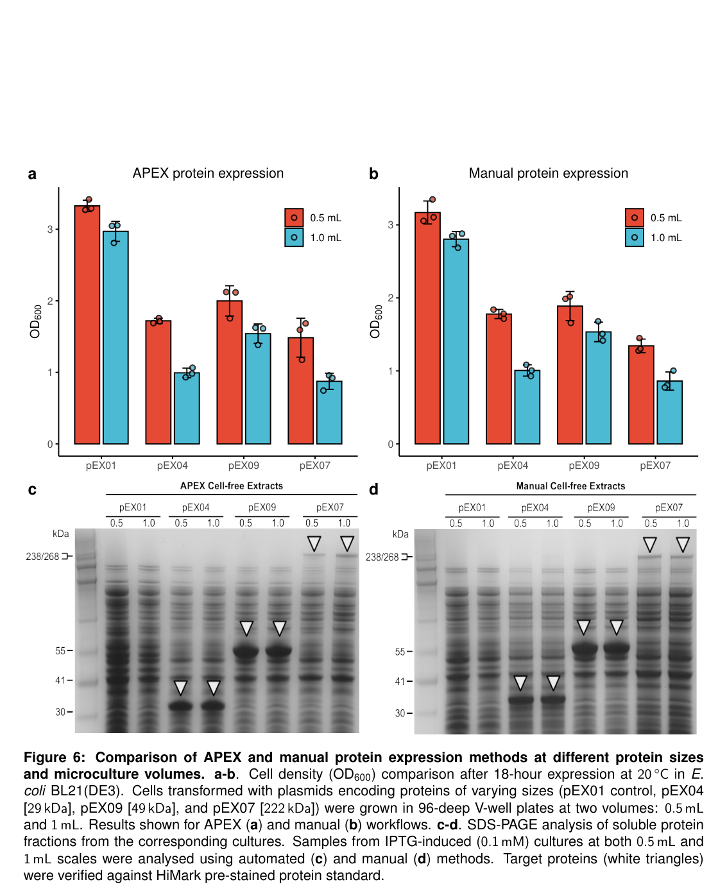
29 kDaから222 kDaに及ぶサイズ・起源の異なる3種類の組換え酵素について、APEX自動化と手動作業での菌体密度および可溶性発現画分のSDS-PAGE解析を比較した結果です。
- (a-b) 培養液量別の菌体密度（OD600）比較: 0.5 mLおよび1.0 mLの96ディープウェル培養において、APEX（a）と手動（b）で同等の生育を確認。
- (c-d) 可溶性画分のSDS-PAGE電気泳動バンド写真:
• pEX04 (Sfp): 29 kDa（*B. subtilis* 由来トランスフェラーゼ）
• pEX09 (CVTA): 49 kDa（*C. violaceum* 由来トランスアミナーゼ）
• pEX07 (PKS): 222 kDa（*M. tuberculosis* 由来 巨大ポリケチド合成酵素）
白三角で示される目的タンパク質バンドは、APEX（c: Protocol 6自動調製）と手動（d: 手作業調製）の間で完全に一致し、巨大タンパク質に至るまで優れた可溶性発現が証明されました。
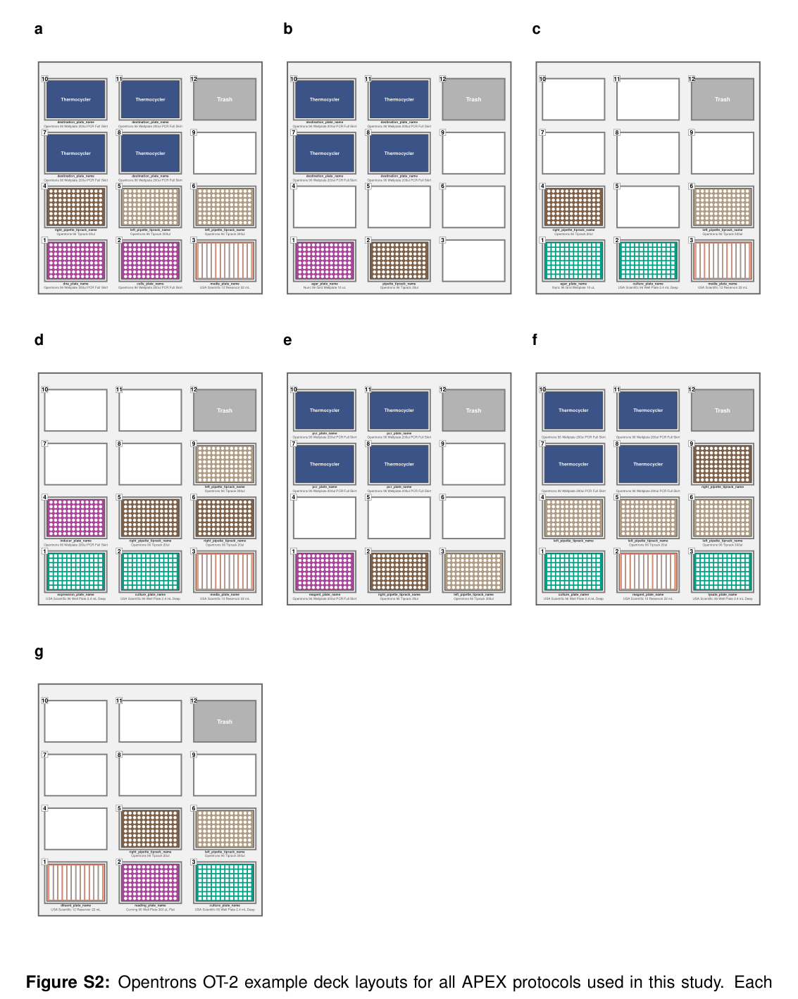
Protocol 1からProtocol 7までの全デッキ配置（a〜g）が俯瞰できるマスターリファレンスです。サーモサイクラー（スロット7,8,10,11占有）の活用法や、12チャンネルリザーバー、各チップラックの配置パターンが一目で確認できます。
⚗️ 下流のタンパク質自動精製（Purification）へのシームレス拡張
Magnetic Module Workflow文献（Kasprzyk et al.）のProtocol 6によって抽出される「可溶性ライセート（Cell-free extract）」は、Opentronsの別売モジュールである「Magnetic Module（磁気モジュール）」を組み合わせることで、完全自動のアフィニティ磁気ビーズ精製へとそのまま接続できます。
可溶性抽出液の調製
菌体破砕液を遠心分離し、可溶性タンパク質を含む上清（40〜100 µL）を96ウェル精製プレートへ自動移送。
磁気ビーズ結合
Ni-NTA Magnetic Beads等を添加。ピペッティング攪拌によりHisタグ標的タンパク質を特異的に吸着。
磁気捕捉 & 洗浄
Magnetic Moduleでビーズを捕捉固定。上清排出後、20〜30 mM イミダゾール含有バッファーで2〜3回高速洗浄。
高純度溶出 & 回収
250〜500 mM イミダゾール溶出液を加え目的タンパク質を解離。高純度タンパク質溶液をクリーンな96ウェルへ回収。